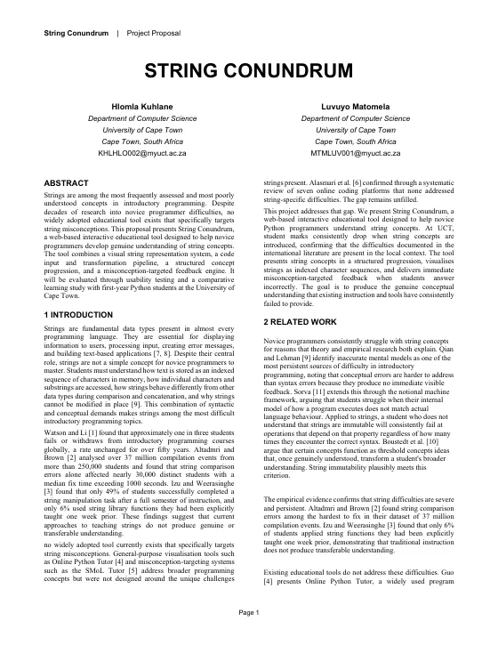
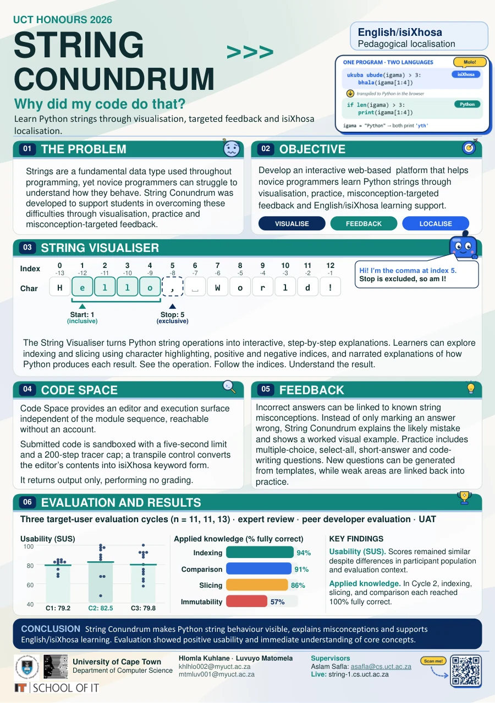
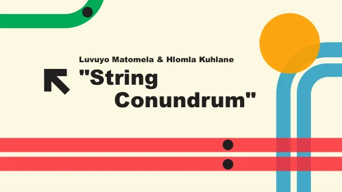
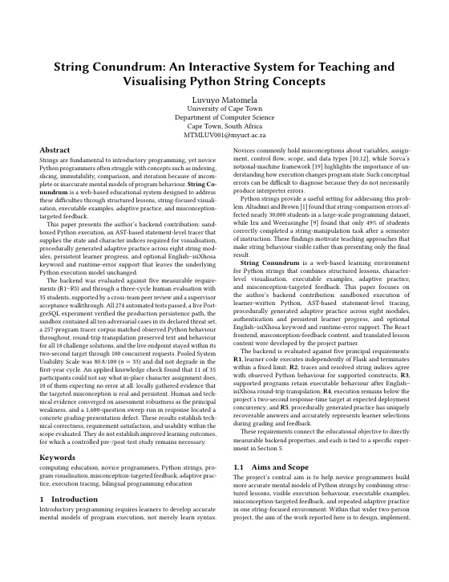
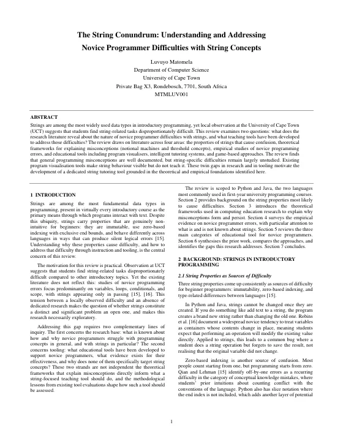
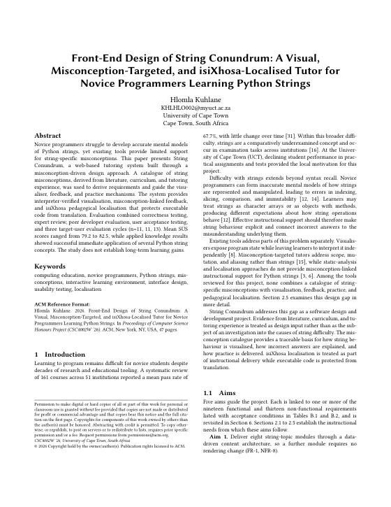

Project proposal
Problem statement, aims, methods, evaluation plan, risk matrix, timeline and work allocation.
4Documents
Everything the project produced, in portable formats: the joint documents first, then each member's individual work, the source code and a short list of further reading.
0Joint work
Produced by Hlomla Kuhlane and Luvuyo Matomela together. The presentation was converted from PowerPoint to PDF for portability.

String Conundrum makes Python string behaviour visible, explains misconceptions and supports English/isiXhosa learning. Evaluation showed positive usability and immediate understanding of core concepts.

Problem statement, aims, methods, evaluation plan, risk matrix, timeline and work allocation.

The slides presented to the department at the proposal stage (converted from PowerPoint).
The problem, the visualiser, Code Space, feedback and the evaluation results on one page.
React front end, Flask back end, database schema, practice engines and tests, as deployed on 30 September 2026. No credentials are included.
1Individual work
Each member wrote a literature review early in the year and a final paper on their own contribution. Both final papers report the same three-cycle evaluation from their own side of the system.

The back-end contribution: sandbox, tracer, adaptive practice, persistence and the full evaluation.

Notional machines, threshold concepts, novice errors and the tools that make string behaviour visible but do not teach it.
Luvuyo Matomela's contribution page

The front-end contribution: misconception-driven design, the visualiser, localisation and the evaluation.

Novice difficulties in CS1, string-specific evidence and why existing tools do not address it.
2Citation
L. Matomela. 2026. String Conundrum: An Interactive System for Teaching and Visualising Python String Concepts. Honours project paper, Department of Computer Science, University of Cape Town.
@techreport{matomela2026stringconundrum,
author = {Luvuyo Matomela},
title = {String Conundrum: An Interactive System for
Teaching and Visualising Python String Concepts},
type = {Honours project paper},
institution = {Department of Computer Science,
University of Cape Town},
address = {Cape Town, South Africa},
year = {2026}
}H. Kuhlane. 2026. Front-End Design of String Conundrum: A Visual, Misconception-Targeted, and isiXhosa-Localised Tutor for Novice Programmers Learning Python Strings. Honours project paper, Department of Computer Science, University of Cape Town.
@techreport{kuhlane2026stringconundrum,
author = {Hlomla Kuhlane},
title = {Front-End Design of String Conundrum: A Visual,
Misconception-Targeted, and isiXhosa-Localised
Tutor for Novice Programmers Learning Python
Strings},
type = {Honours project paper},
institution = {Department of Computer Science,
University of Cape Town},
address = {Cape Town, South Africa},
year = {2026}
}3Online
Live application
Non-permanent external link. The deployment runs on a UCT Computer Science server and may be taken offline after the 2026 assessment period. Guests can open the visualiser and Code Space without an account; modules, Challenges and the leaderboard need a sign-in.
Source repository
The full history of the project, with the deployed version on the production branch. The archive on this site is a snapshot of that branch, so the code stays available if the repository moves.
4Further reading
A short list of stable, well-established resources. The full reference lists are in the papers above and on the background page.
| Resource | Why it is relevant |
|---|---|
| Python documentation: the str type (external link) | The authoritative description of string methods and immutability. |
| Python documentation: sequence operations (external link) | The exact indexing and slicing rules the visualiser reproduces. |
| Online Python Tutor (external link) | The best-known general program visualiser, and the main point of comparison for this project. |
| NLLB-200: Scaling neural machine translation to 200 languages (external link) | The translation model used, offline, to produce the isiXhosa lesson content. |
| Bangor, Kortum and Miller (2008): An empirical evaluation of the SUS (external link) | The benchmark used to interpret the System Usability Scale scores. |
| UCT Computer Science Honours projects archive (external link) | The department's archive of Honours project websites, where this site is submitted. |